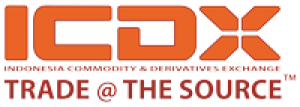

KITA HADIR
Memberikan Investasi untuk Masa Depan Anda
Langsung di dalam bursa
Terintregasi Dengan Pasar Global
Tingkat Keamanan Terbaik
Likuiditas Pasar yang Sempurna

Selamat Datang di Sinarmas Futures
Sinarmas Futures
PT Sinarmas Futures mendapatkan ijin operasional dari regulator perdagangan berjangka komoditi Indonesia, Badan Pengawas Perdagangan Berjangka Komoditi – BAPPEBTI – Kementerian Perdagangan Republik Indonesia sejak tahun 2006.
Dengan pengalaman lebih dari 16 tahun, PT Sinarmas Futures akan menjadi mitra terbaik dan terpercaya untuk Anda bertransaksi di perdagangan berjangka komoditi Indonesia.
TINGKATKAN NILAI ASET ANDA
Kenapa Memilih Kami?
Kami memberikan layanan yang lebih baik, sesuai kebutuhan Anda dan Anda dapat mengelola investasi Anda dari mana saja baik dari rumah atau tempat kerja, kapan pun dan di mana pun.
Keamanan Dana Nasabah
Prosedur keamanan dana nasabah sepenuhnya ditempatkan di lembaga clearing (Indonesia Clearing House)
Keamanan Dana Nasabah
Prosedur keamanan dana nasabah sepenuhnya ditempatkan di lembaga clearing (Indonesia Clearing House)
Keamanan Dana Nasabah
Prosedur keamanan dana nasabah sepenuhnya ditempatkan di lembaga clearing (Indonesia Clearing House)
Keamanan Dana Nasabah
Prosedur keamanan dana nasabah sepenuhnya ditempatkan di lembaga clearing (Indonesia Clearing House)
BAGAIMANA ANDA DAPAT MENGELOLA
Keuangan Anda Dengan Lebih Baik?
LANGKAH 1
Daftar untuk membuka akun
LANGKAH 2
Lakukan Deposit dan Mulai Trading
LANGKAH 3
Tarik Pendapatan Anda ke Rekening Bank Anda
Pelajari, Rencanakan dan investasi di GOFX dan transaksi melalui aplikasi MT5
TRADING DENGAN KEPERCAYAAN DIRI
Aplikasi MT5 menyediakan seperangkat alat yang dirancang untuk memfasilitasi transaksi Anda langsung ke bursa ICDX
Platform Multi Asset no 1 di Dunia
Kedalaman Informasi Pasar
Platform untuk Desktop dan smartphone Anda
Akses ke Perdagangan Otomatis

TRADING GOFX – EMAS, FOREX, MINYAK MENTAH
Mulailah Sekarang
Mulailah perjalanan Anda menjadi investor sukses bersama kami. Apakah Anda siap untuk mulai mengelola aset anda bersama kami?




Tentang Perusahaan
Sinar Mas Land Plaza, Menara lll, Lantai 5
Jalan M.H. Thamrin No.51, Jakarta
Jalan M.H. Thamrin No.51, Jakarta
Senin-Jumat: 09.00-17.00 WIB
(021) 392 5550
cs@sinarmasfutures.co.id
Pemberitahuan Resiko
Semua produk finansial yang ditransaksikan dalam sistem margin mempunyai resiko tinggi terhadap dana Anda. Produk finansial ini tidak diperuntukkan bagi semua investor dan Anda bisa saja kehilangan dana lebih dari deposit awal Anda. Pastikan bahwa Anda benar-benar mengerti resikonya dan mintalah nasihat independen jika diperlukan.
Mengingat transaksi ini adalah High Risk and High Return, Calon nasabah diwajibkan melakukan Simulasi Transaksi (Demo Account) terlebih dahulu dan mempelajari Peraturan Transaksi (Trading Rules) sebelum melakukan transaksi.
Tata Cara Pengaduan
Simak tata cara pengaduan
Lihat di sini
Link Pengaduan Nasabah
https://pengaduan.bappebti.go.id